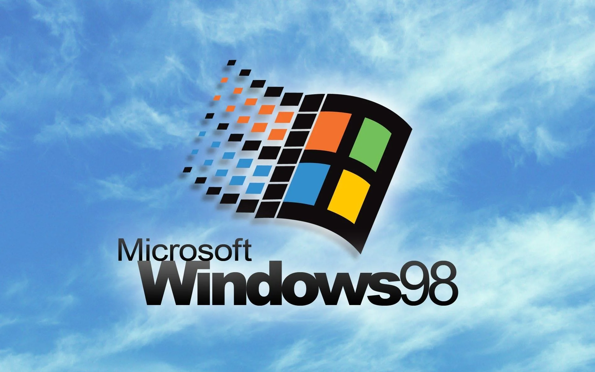
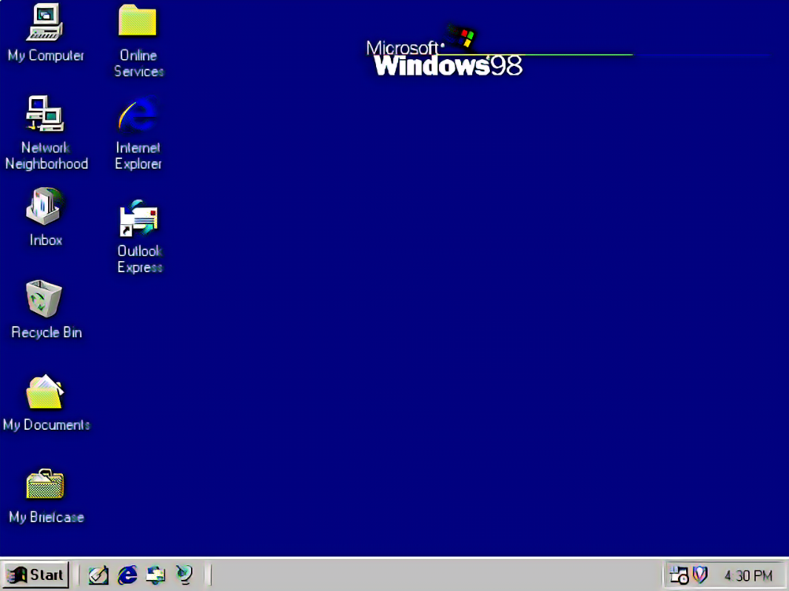

Windows 98

Wersja: Windows 98 (First Edition)
Data premiery: 25 Czerwca 1998
Architektura: 16/32-bit
Windows 98 to legenda późnych lat 90., system idealny do grania, surfowania po necie przez modem 56k i grania w "Solitaire". Zawierał usprawniony interfejs, Active Desktop oraz Windows Update, który działał… czasem. 😅

Data premiery: 25 Czerwca 1998
Architektura: 16/32-bit
Windows 98 to legenda późnych lat 90., system idealny do grania, surfowania po necie przez modem 56k i grania w "Solitaire". Zawierał usprawniony interfejs, Active Desktop oraz Windows Update, który działał… czasem. 😅
🔧 Wymagania sprzętowe
- Procesor: 66 MHz (zalecany 90 MHz)
- Pamięć RAM: 16 MB (zalecane 32 MB)
- Dysk twardy: 500 MB wolnego miejsca
- Karta graficzna: SVGA
- Napęd CD-ROM (lub emulator ISO)
💽 Instrukcja instalacji
- Pobierz plik ISO klikając przycisk poniżej.
- Utwórz bootowalny CD/USB lub uruchom w maszynie wirtualnej (np. VirtualBox).
- Podczas instalacji wpisz klucz produktu (można użyć testowego).
- Nie zapomnij o sterownikach do dźwięku i grafiki – to nie Windows 10 😉